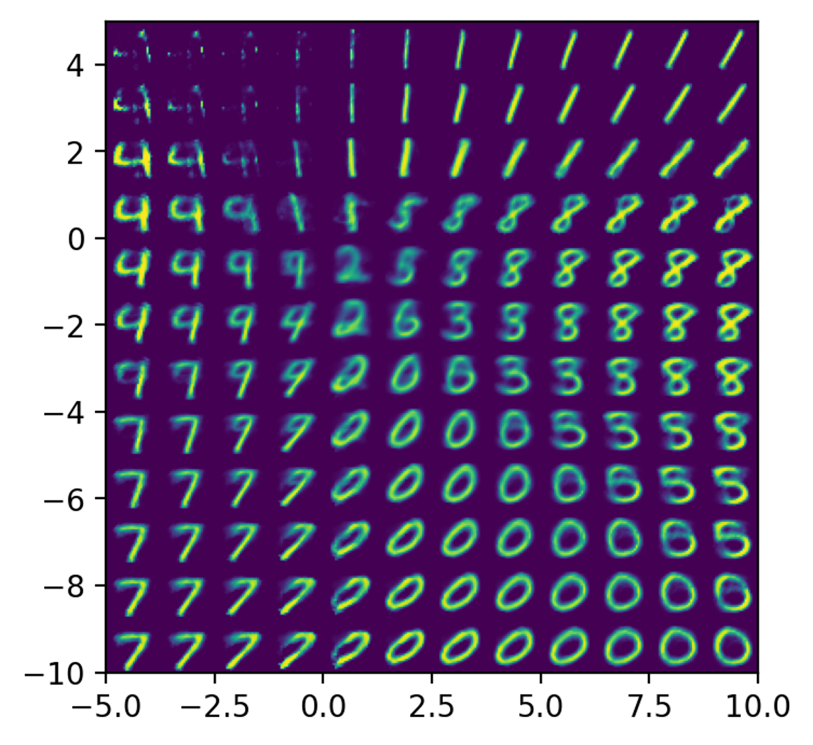

Using device: cuda
Training completed and model saved!What is an Autoencoder?
- Neural network architecture that learns to:
- Compress (encode) data into a lower-dimensional representation
- Reconstruct (decode) the original data from this representation
- Trained to minimize reconstruction error
- Learns efficient data representations unsupervised
Basic Autoencoder Architecture
Autoencoder Components
- Encoder: Compresses input into latent representation
- Latent Space: Compressed representation of the data
- Decoder: Reconstructs input from latent representation
- Training objective: minimize difference between input and output
Training an Autoencoder
Applications of Autoencoders
- Dimensionality Reduction
- Alternative to PCA
- Can capture non-linear relationships
- Denoising
- Train to reconstruct clean data from noisy input
- Useful for image restoration
- Feature Learning
- Learn meaningful representations for downstream tasks
- Transfer learning
Variations of Autoencoders
- Denoising Autoencoders
- Add noise to input during training
- Learn to recover original data
- Variational Autoencoders (VAE)
- Learn probabilistic encodings
- Generate new samples
- Sparse Autoencoders
- Add sparsity constraints to latent representation
- Learn more efficient encodings
Example: Denoising Autoencoder
Practical Tips for Autoencoders
- Choose appropriate architecture for your data type
- CNNs for images
- RNNs for sequences
- Dense layers for tabular data
- Consider:
- Latent space dimension
- Depth of encoder/decoder
- Loss function
- Regularization techniques
- Common issues:
- Overfitting
- Underfitting
- Mode collapse (in VAEs)
- Reconstruction quality vs. compression trade-off
Variational Autoencoders (VAEs)
- Extension of traditional autoencoders that learns a probabilistic latent representation
- Instead of encoding to fixed points, encodes to probability distributions
- Enables:
- Principled generation of new samples
- Meaningful latent space interpolation
- Better regularization of the latent space
VAE vs. Traditional Autoencoder
Traditional Autoencoder
- Deterministic encoding
- Point-wise latent representation
- No guarantee of continuous latent space
- Focus on reconstruction
Variational Autoencoder
- Probabilistic encoding
- Distribution-based latent representation
- Continuous, structured latent space
- Balance between reconstruction and regularization
VAE Mathematics
Instead of encoding input \(x\) to a point, VAE encodes to parameters of a distribution:
- Encoder outputs \(\mu\) and \(\log \sigma^2\) for each latent dimension
- Latent vector is sampled: \(z = \mu + \sigma \odot \epsilon\), where \(\epsilon \sim \mathcal{N}(0, I)\)
The VAE loss has two terms: \[\mathcal{L}_{\text{VAE}} = \mathcal{L}_{\text{reconstruction}} + \beta \cdot \mathcal{L}_{\text{KL}}\]
where: \[\mathcal{L}_{\text{KL}} = \frac{1}{2}\sum_{j=1}^J (\mu_j^2 + \sigma_j^2 - \log(\sigma_j^2) - 1)\]
VAE Implementation
Training a VAE
VAE Latent Space Properties
- Continuous: Similar points in latent space decode to similar images
- Structured: Enforced by KL divergence term
- Meaningful: Can perform interpolation and arithmetic in latent space


Generating New Samples with VAE
Key Differences Summary
- Latent Space
- Vanilla: Discrete, potentially discontinuous
- VAE: Continuous, probabilistic
- Loss Function
- Vanilla: Only reconstruction loss
- VAE: Reconstruction + KL divergence loss
- Generation Capabilities
- Vanilla: Limited/unreliable
- VAE: Principled generation of new samples
- Training Stability
- Vanilla: Can be unstable
- VAE: More stable due to regularization
Example training a VAE
VAE vs. Traditional Autoencoder
Traditional Autoencoder

Variational Autoencoder